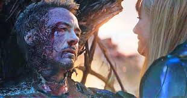

Iron Man is a superhero appearing in American comic books published by Marvel Comics. Co-created by writer and editor Stan Lee, developed by scripter Larry Lieber, and designed by artists Don Heck and Jack Kirby, the character first appeared in Tales of Suspense #39 in 1963, and received his own title with Iron Man #1 in 1968. Shortly after his creation, Iron Man was a founding member of a superhero team, the Avengers, with Thor, Ant-Man, Wasp and the Hulk. Iron Man stories, individually and with the Avengers, have been published consistently since the character's creation.
Iron Man is the superhero persona of Anthony Edward "Tony" Stark, a businessman and engineer who runs the company Stark Industries. Beginning his career as a weapons manufacturer, he is captured in a war zone, and his heart is severely injured by shrapnel. To sustain his heart and escape his captors, he builds a technologically advanced armor. After escaping, he continues using the armor as a superhero, creating more advanced models that grant him superhuman strength, flight, energy projection, and other abilities. The character was used to explore political themes, and early Iron Man stories were set in the Cold War. Later stories explored other themes, such as civil unrest, technological advancement, corporate espionage, alcoholism, and governmental authority.
Major Iron Man stories include Demon in a Bottle (1979), Armor Wars (1987–1988), Extremis (2005), and Iron Man 2020 (2020). He is also a leading character in the company-wide stories Civil War (2006–2007), Dark Reign (2008–2009), and Civil War II (2016). Iron Man's supporting cast has produced additional superhero characters, including James Rhodes as War Machine, Pepper Potts as Rescue, and Riri Williams as Ironheart as well as reformed villains Black Widow and Hawkeye. Iron Man's list of enemies includes his archenemy, the Mandarin, as well as many supervillains of communist origin and many that double as business rivals for Stark.
Robert Downey Jr. portrayed Tony Stark in Iron Man (2008), the first film of the Marvel Cinematic Universe, and continued to portray the character until his final appearance in Avengers: Endgame (2019). Downey's portrayal popularized the character, elevating Iron Man as one of Marvel's most recognizable superheroes.
| Team Affiliations | |
|---|---|
| Avengers | |
| Department of Defense | |
| New Avengers | |
| Illuminati | |
| Mighty Avengers | |
| S.H.I.E.L.D. | |
| Stark Industries |
During October 17, 2023, Tony Stark sacrificed his life to defeat Thanos and thus save the universe from the Mad Titan, who sought to defeat The Avengers of the present after having done so in the past
